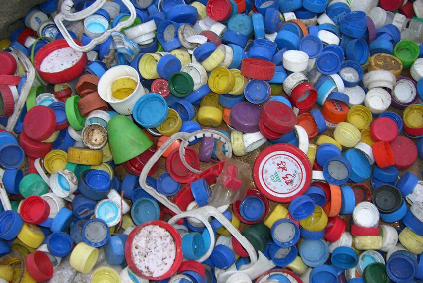

文章来源： 更新时间：2018-06-05 09:30:33
如今，环境问题、环保问题是人们忧虑的最多的问题。任何行业的任何项目，如果首先考虑到了绿色环保，便是能很快被大众所认可的。看来，在废品回收行业中，废塑料的回收不是那么容易的。废塑料袋满天飞，已经不是什么新奇事。有关报道也讲过废塑料如果不处理任其丢弃给环境带来的危害是不可估量的。所以废塑料回收的意义相当重大！

但很可惜，塑料的回收并不容易，推行成效亦不理想。与金属回收比较，废塑料的回收再利用技术的最大问题是难以用机器进行自动分类，工序牵涉大量人力。除了容器通常以单一塑料造成以外，不少塑胶制品皆以多种不同材料装配而成，将其解体的成本可能比回收得来的塑料价钱高。
而且，部分种类的塑料回收没有经济价值，例如发泡胶。这类塑胶垃圾通常会被掩埋或焚化。现时，美国回收塑料占的比重很低，只有5%。
随着塑料制品消费量不断增大，废弃塑料也不断增多。目前我国废塑料的种类主要为塑料薄膜、塑料丝及编织品、泡沫塑料、塑料包装箱及容器、日用塑料制品、塑料袋和农用地膜等。
另外，我国汽车用塑料年消费量已达40万吨，电子电器及家电配套用塑料年消费量已达100多万吨，这些产品报废后成了废塑料的重要来源之一。据了解，2004年国内废塑料已达约1100万吨。这些废塑料的存放、运输、加工等待被加工的废弃塑料原料应用及后处理若不得当，势必会破坏环境，危害百姓健康。
地址：广东省广州市天河区88号电话：400-123-4657传真：+86-123-4567
版权所有：Copyright © 2012-202X 某某公司 版权所有 粤IP*********